sicr3p
Todos los servicios,
explicados y demostrados.
Qué hace cada módulo, cómo funciona por dentro, qué lo hace distinto, y ejemplos reales de cada informe que el sistema genera — desde el cálculo de una factura hasta el export Alcance 3 del GHG Protocol y el expediente sellado de una carga que cruza cuatro países.
Qué es sicr3p
El problema: la evidencia ambiental de una empresa está regada en papeles de cuatro países. La solución: un solo registro sellado que sirve para todo.
Toda empresa ya produce, sin saberlo, su contabilidad ambiental: está escondida en sus facturas de electricidad, combustible, transporte y materiales. Y toda carga que cruza el Corredor Bioceánico —de Campo Grande a los puertos de Antofagasta— va dejando un rastro de documentos: packing list, MIC/DTA, certificados de origen, comprobantes de frontera. Hoy ese rastro vive disperso entre correos, carpetas y bodegas de cuatro países, y cuando un comprador europeo, un mandante corporativo o una autoridad pide evidencia, reconstruirlo cuesta semanas.
sicr3p convierte los documentos que la empresa ya tiene en evidencia ambiental y de trazabilidad verificable por cualquiera. Se sube el documento (una foto basta), el sistema lo lee, calcula lo que hay que calcular con metodología citada, lo sella en una cadena de integridad pública, y lo deja disponible como informe, pasaporte o export en el formato que cada destinatario exige.
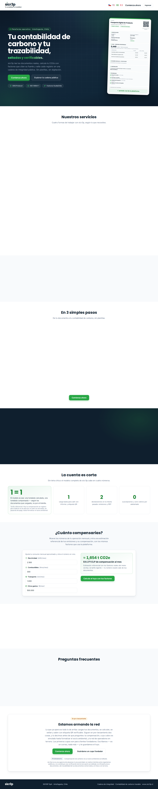
Los tres mundos que atiende
| Mundo | Qué necesita | Qué le entrega sicr3p |
|---|---|---|
| Comercio y pymes | Cumplir REP y responder a mandantes sin equipo técnico. | Cálculo automático desde la factura, declaración de embalaje, informes mensuales. |
| Mandantes corporativos | Datos de proveedores para NCG 461, IFRS S2, CDP. | Panel propio con el CO2e de cada proveedor y exports Alcance 3 y CBAM listos. |
| Exportadores del Corredor | Demostrar origen, ruta y emisiones ante compradores y aduanas. | Pasaporte de carga sellado por hash, con todos los actores firmando en la misma cadena. |
La innovación
Cinco decisiones de diseño que no existen juntas en ninguna otra plataforma de la región.
1 · Posición sin GPS: el paso sellado vale más que el punto satelital
La ubicación de una carga en sicr3p no es una coordenada: es la secuencia de puntos de control sellados por hash que los actores autorizados van registrando. Un punto GPS dice dónde estuvo un aparato; un paso sellado dice quién declaró el paso, con qué credencial, en qué momento y encadenado a qué historia previa. Es información más pobre en precisión geográfica y mucho más rica en valor probatorio — y no exige instalar nada en el camión: un teléfono con cámara basta.
2 · Multi-actor sin hardware
Chofer, agencia de aduana, puerto, proveedor y mandante participan de la misma cadena desde su propio panel, cada uno viendo solo lo suyo. La alternativa de mercado (sensores, GPS dedicado, NFC industrial) cuesta por vehículo; aquí el costo marginal de sumar un actor es cero.
3 · La confianza no depende de sicr3p
Cada registro queda encadenado criptográficamente al anterior. Alterar, insertar o borrar
un eslabón rompe la cadena de forma matemáticamente detectable por cualquiera,
sin cuenta y sin pedir permiso, en el explorador público /cadena. El sistema
está diseñado para que ni siquiera su operador pueda reescribir la historia sin que se note.
4 · Cada cifra sabe cómo se calculó
El motor de cálculo está versionado: cada resultado queda estampado con la versión de los factores vigentes al momento del cálculo. Si mañana cambia el factor de electricidad, los informes antiguos siguen mostrando el que se usó — exactamente lo que un verificador ISO 14064-3 necesita para reproducir un número años después.
5 · Un expediente, cuatro usos
El mismo registro sellado alimenta la declaración REP chilena, el export Alcance 3 del mandante, el reporte CBAM del comprador europeo y el pasaporte comercial público del lote. La trazabilidad se resuelve una vez y responde a todos los marcos a la vez.
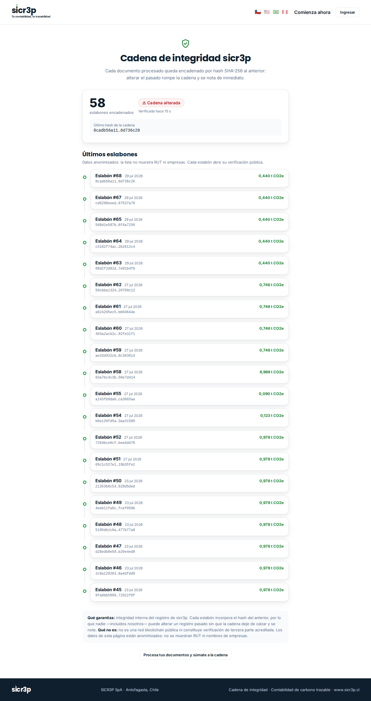
Cómo funciona por dentro
Del documento al informe en seis etapas, con una regla de oro: la IA lee, pero nunca calcula.
El recorrido de un documento
- Entrada. El usuario sube una foto, un PDF o el XML del DTE (el documento tributario electrónico del SII). Sirve la cámara del teléfono.
- Lectura. Si es XML, se parsea directo (el camino más preciso). Si es imagen o PDF escaneado, se extrae el texto (OCR cuando hace falta) y una IA lo estructura: emisor, receptor, ítems, cantidades. Si la IA no está disponible o su respuesta no valida, un motor de reglas toma el relevo automáticamente.
- Clasificación. Cada ítem se asigna a una categoría del motor (electricidad, combustible, transporte, materiales…), cada una con su factor de emisión y su fuente citada.
- Cálculo. El motor propio determinista multiplica cantidad × factor. Este paso es 100% reproducible: mismos datos, mismo resultado, siempre. La IA jamás participa aquí.
- Sello. El resultado se encadena por hash al registro anterior de la empresa y a la cadena global del sistema.
- Salida. Informe PDF con metodología citada, etiqueta QR, exports, y el registro queda disponible para los cruces (mandante, REP, Capital Natural).
La cadena de hash, con un ejemplo
Cada eslabón guarda: sus datos, un número aleatorio único (nonce), el hash del documento y el hash del eslabón anterior. El hash propio se calcula sobre todo eso junto. Si alguien editara la cantidad de un eslabón antiguo, su hash cambiaría; el eslabón siguiente —que guardó el hash original— ya no calzaría, y toda la cadena posterior quedaría inválida a la vista de cualquier verificador. Por eso la única forma de corregir un error es agregar un eslabón nuevo que lo corrija, dejando la historia completa a la vista: igual que en contabilidad.
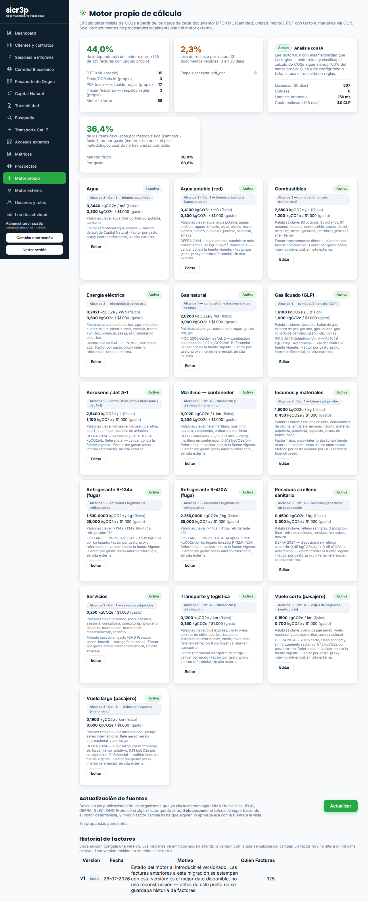
Para el caso borde de documentos sin XML ni texto extraíble existe además un motor externo de respaldo, hoy en modo de reserva: el panel de admin muestra en todo momento qué porcentaje del análisis se resolvió con el motor propio.
Tecnología, en una línea
Backend Node.js + PostgreSQL con 62 migraciones idempotentes; frontend React; 592 tests automatizados; sesiones JWT con panel obligatorio por rol; login opcional con llave física FIDO2/WebAuthn; despliegue automatizado con respaldo diario y verificación post-deploy.
El viaje de una carga
La historia completa de un lote, pantalla por pantalla, con los ocho actores tocando la misma cadena.
Paso 1 — El admin crea el lote. Desde Pasaporte de Origen se registra la
carga (material, cantidad, origen), se emite su código único LM-AAAA-NNNNNN y
nace el eslabón génesis de su cadena.
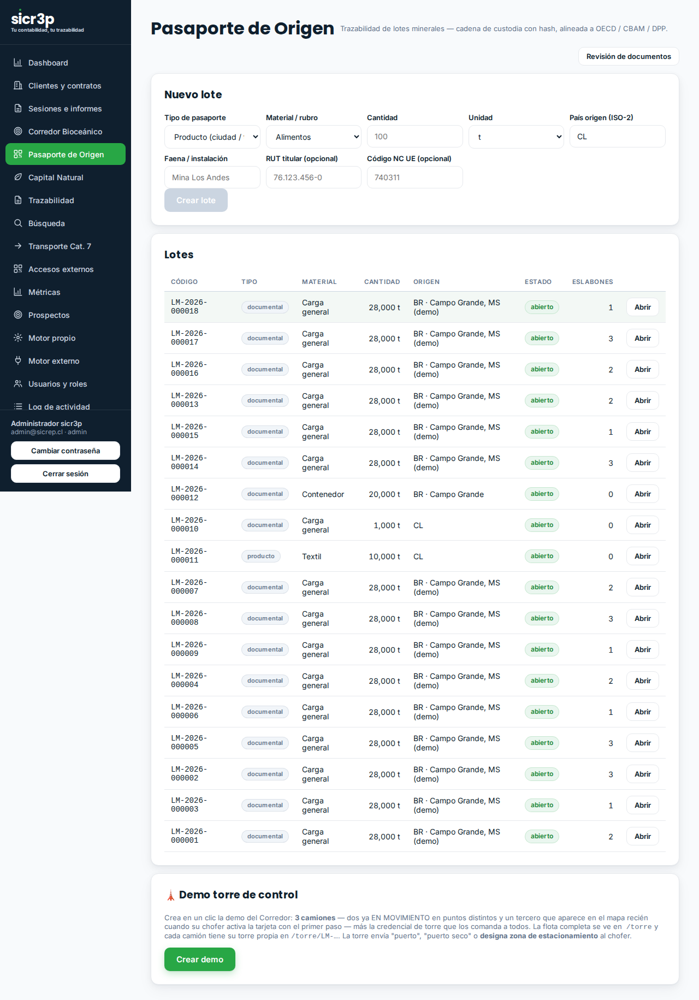
Paso 2 — El proveedor firma. El generador de la carga entra a su panel (puede exigírsele llave física FIDO2) y firma el lote asignado. Su identidad queda sellada como eslabón.
Paso 3 — El chofer activa su Tarjeta de Viaje. Escanea el QR de su credencial, ingresa su clave, y registra el primer paso. Desde ese momento el camión "aparece" en el mapa.
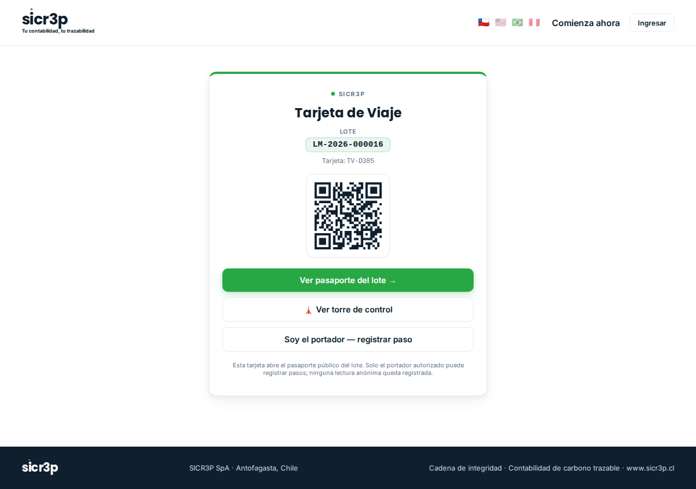
Paso 4 — La torre de control acompaña. El operador ve toda la flota en el mapa del Corredor —cada camión en su último punto sellado— y envía instrucciones (ir a puerto, puerto seco o estacionamiento) que llegan al instante a la credencial del chofer.

Paso 5 — La agencia de aduana documenta. Captura factura, packing list, MIC/DTA, certificados. El semáforo documental pasa de rojo a verde según la completitud del expediente.
Paso 6 — El puerto consulta. Al llegar la carga, el puerto ve el tránsito con su cadena de custodia completa y su verificación de integridad — solo de los lotes que pasaron por su punto.
Paso 7 — El mandante exporta. La empresa que contrató el transporte ve el CO2e de sus proveedores y descarga sus exports Alcance 3 y CBAM.
Paso 8 — Cualquiera verifica. El pasaporte público del lote se abre sin cuenta con el código o el QR: eslabones, semáforo, emisiones y estado de integridad.
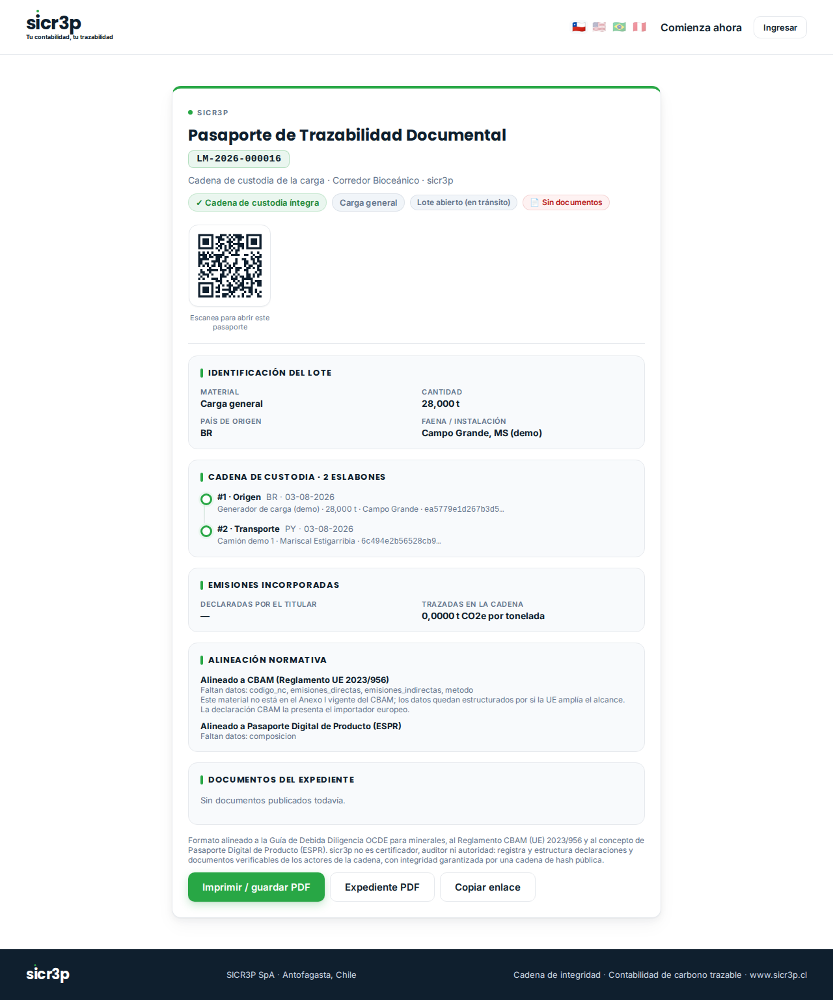
Medición de carbono
El servicio fundacional: t CO2e desde el documento real, con fuente citada y sello de integridad.
Cómo se usa
- El cliente (o el operador de terreno) sube sus documentos del mes — hasta 5 por envío en el flujo público, sin límite desde los paneles.
- El sistema calcula al instante y muestra el detalle por ítem con su categoría.
- Se descarga el informe consolidado en PDF; cada factura puede llevar además su etiqueta con QR de verificación.
- Mes a mes, el informe mensual consolida todo el período por cliente.
Metodologías por país
Cada país del Corredor tiene su metodología con factores y fuente propios, editables desde el admin. Chile está validado (GHG Protocol Scope 3 · ISO 14064-1, factores HuellaChile del MMA, electricidad SEN 2023: 0,2421 kgCO2e/kWh). Argentina, Paraguay y Brasil están cargados como borrador pendiente de validación — y el sistema lo dice así, en vez de calcular con cifras no confiables: honestidad antes que cobertura.
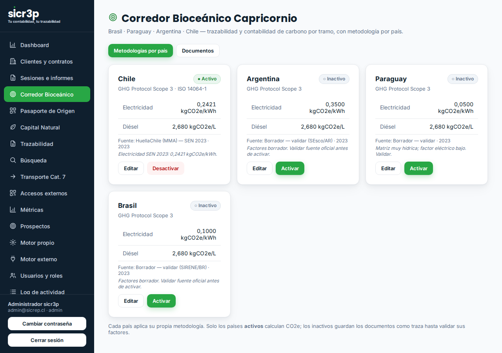
Los documentos que produce
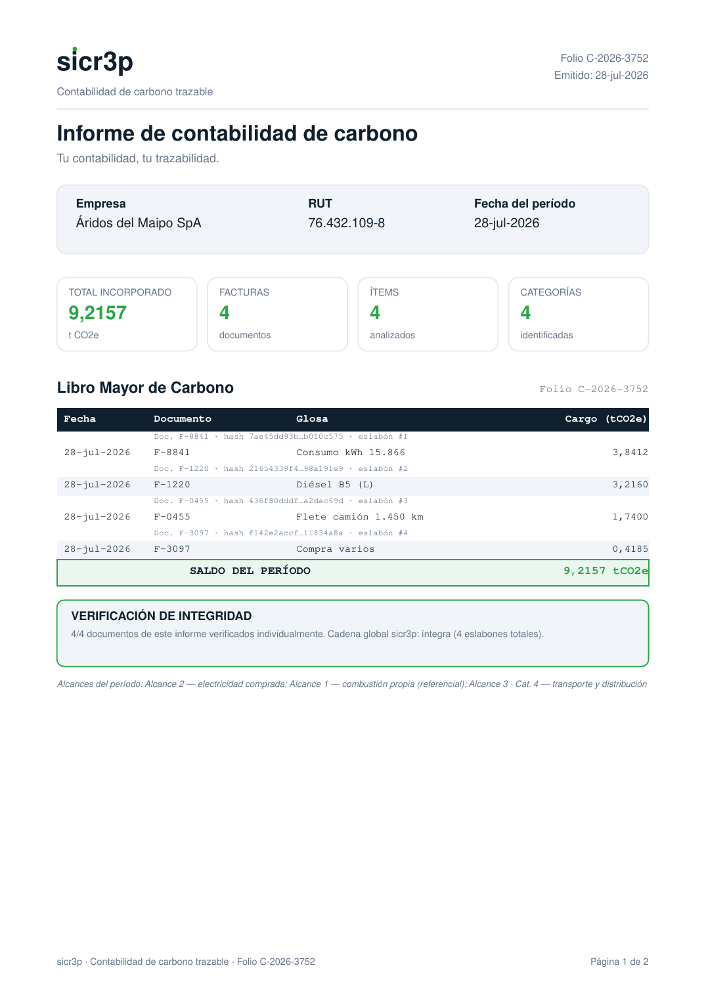
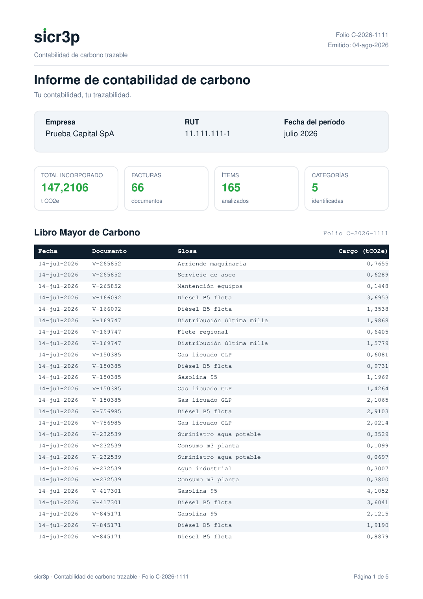
El informe declara los alcances GHG de cada categoría con la fuente congelada de la versión del motor usada en el cálculo, la declaración REP si existe, y el sello de integridad de la cadena. La etiqueta por factura agrega un QR que lleva a la verificación pública del documento.
Alcance 3 (Scope 3) — GHG Protocol
Cómo las facturas de los proveedores se convierten en el reporte de cadena de valor del mandante, en las 15 categorías oficiales.
El Alcance 3 son las emisiones de la cadena de valor: todo lo que la empresa no emite directamente (Alcance 1) ni por su electricidad (Alcance 2), pero que ocurre gracias a su actividad — lo que compran, lo que transportan terceros, lo que sus proveedores queman. Es el alcance más difícil de medir y el que los marcos modernos (IFRS S2 del ISSB, NCG 461 de la CMF, CDP) exigen con más fuerza.
Cómo lo resuelve sicr3p
Cuando un proveedor procesa sus facturas en sicr3p, cada documento emitido a un mandante
queda asociado al RUT receptor. Cada categoría del motor lleva su clasificación
Alcance N · Cat. M — descripción. Con eso, el sistema agrega automáticamente
por proveedor y por categoría GHG: el mandante obtiene su Alcance 3 desde documentos
reales de sus proveedores, no desde promedios de industria — y cada fila conserva
la fuente del factor con que se calculó.
Las 15 categorías del GHG Protocol (WRI/WBCSD)
| # | Categoría | # | Categoría |
|---|---|---|---|
| 1 | Bienes y servicios adquiridos | 9 | Transporte y distribución aguas abajo |
| 2 | Bienes de capital | 10 | Procesamiento de productos vendidos |
| 3 | Combustibles y energía (no A1/A2) | 11 | Uso de productos vendidos |
| 4 | Transporte y distribución aguas arriba | 12 | Fin de vida de productos vendidos |
| 5 | Residuos de las operaciones | 13 | Activos arrendados aguas abajo |
| 6 | Viajes de negocios | 14 | Franquicias |
| 7 | Desplazamiento de empleados | 15 | Inversiones |
| 8 | Activos arrendados aguas arriba |
El export, tal como sale
Endpoint GET /api/mandante/export/alcance3?anio=&formato=csv (autenticado
por API key del mandante o su sesión de panel). Columnas del CSV:
| rut_proveedor | cat. | categoría GHG Protocol | descripción motor | docs | t CO2e | fuente del factor |
|---|---|---|---|---|---|---|
| 78.345.120-4 | 3 | Combustibles y energía | Energía eléctrica | 1 | 3,8412 | MMA Chile — HuellaChile (2023) |
| 79.218.440-5 | 3 | Combustibles y energía | Combustibles | 1 | 3,2160 | IPCC — Guías 2006 (v2) |
CBAM y comercio internacional
El pasaporte de carbono que la frontera europea ya cobra: emisiones incorporadas por tonelada, con método declarado.
El CBAM (Reglamento UE 2023/956) obliga al importador europeo a declarar las emisiones incorporadas de ciertos productos (hierro, acero, aluminio, cemento, fertilizantes, hidrógeno, electricidad) — y a pagar por ellas. El importador le pide esos datos a su exportador; el exportador, a toda su cadena. Quien no puede demostrarlos con método, paga con los valores por defecto — más caros.
Qué entrega sicr3p
Para cada lote con código NC de capítulo CBAM, el sistema arma el reporte con: código NC, emisiones directas e indirectas en t CO2e por tonelada, método de cálculo y qué datos faltan. Sale en PDF (para adjuntar a la negociación) y CSV/JSON (para integrar en el sistema del importador).

La misma familia de exports cubre el Pasaporte Digital de Producto (ESPR) y las declaraciones de debida diligencia OCDE para minerales — todos alimentados por el mismo expediente sellado del lote.
REP — Ley 20.920
La declaración de envases y embalajes, resuelta en el mesón y sellada por hash.
La Ley REP obliga a productores y comercializadores a declarar los envases y embalajes que ponen en el mercado, con metas de reciclaje crecientes (D.S. 12/2020). Para una pyme sin equipo técnico, eso es una planilla hostil; para sicr3p, es un paso más del mismo flujo.
Cómo se usa
- En el panel de terreno, junto con procesar los documentos del cliente, el operador registra el embalaje: peso total y peso reciclable, por material.
- El servidor calcula el porcentaje reciclable y asigna el nivel (Alto / Medio / Bajo).
- La declaración queda sellada con hash, con historial de cambios, y aparece en el informe consolidado del cliente y en la etiqueta de la factura.
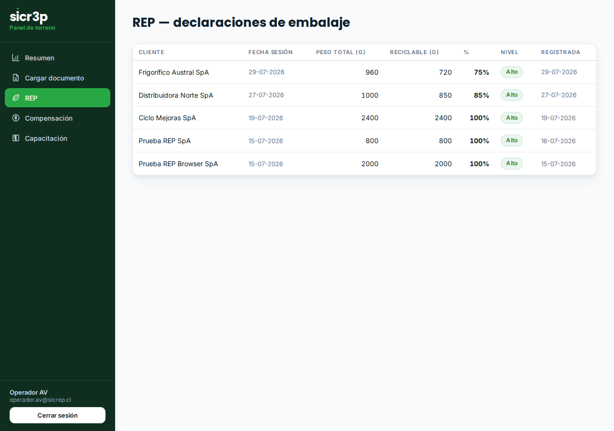
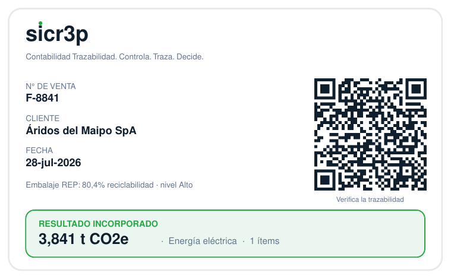
Capital Natural
El carbono tratado con lógica contable: cuentas, movimientos y un balance que se puede auditar.
La mayoría de las plataformas tratan las emisiones como una lista. sicr3p las trata como contabilidad: existe un plan de cuentas ambientales (carbono, agua, energía, residuos…), cada evento genera un movimiento con cargo y abono, cada movimiento queda hasheado, y el conjunto produce un Estado de Capital Natural — el análogo ambiental de un balance financiero.
Cómo funciona
- Los cálculos de carbono alimentan automáticamente la cuenta CO2e (el "libro mayor de carbono" espejo).
- El admin puede registrar movimientos manuales en las demás cuentas (consumo de agua, energía, residuos valorizados), con respaldo documental.
- Los activos ambientales pueden valorizarse (automático por precio de referencia o manual), quedando el criterio registrado.
- El balance en PDF muestra saldos por cuenta, movimientos del período y el sello de integridad de cada cadena.


Corredor Bioceánico
El módulo insignia: pasaporte de origen, tarjeta de viaje, torre de control y semáforo documental sobre la ruta Campo Grande → Antofagasta.
Las piezas
| Pieza | Qué es | Quién la usa |
|---|---|---|
| Pasaporte de Origen | El expediente del lote: eslabones de custodia, documentos, emisiones, declaraciones OCDE/CBAM, balance de masas con tolerancia de merma. | Admin lo crea; todos lo alimentan; cualquiera lo verifica. |
| Tarjeta de Viaje | Credencial QR del portador (chofer). Registra pasos por los 14 puntos de control del catálogo, sin GPS ni app. | El chofer, desde su teléfono. |
| Torre de Control | Mapa de la flota completa + instrucciones operativas (puerto / puerto seco / estacionamiento) que llegan a la credencial del chofer. | El operador logístico. |
| Semáforo documental | Verde/amarillo/rojo según la completitud del expediente aduanero (factura, packing list, MIC/DTA, certificados). | Agencia lo alimenta; puerto y mandante lo leen. |
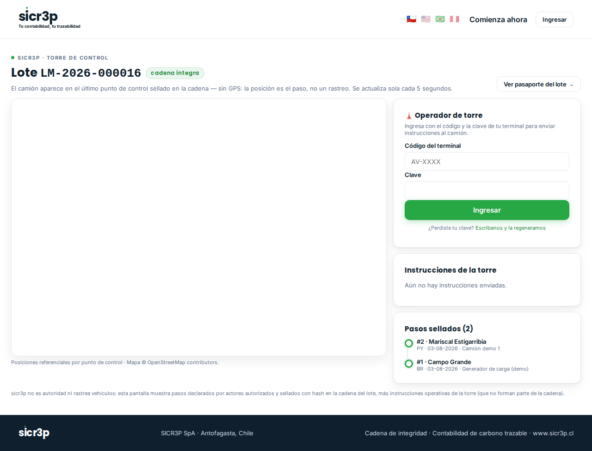
El expediente sellado
Todo converge en un PDF: el expediente del lote, con cada eslabón, cada documento, el semáforo, las emisiones aportadas y el anclaje a la cadena global. Es el documento que se le muestra a un comprador, a una aduana o a un financista.
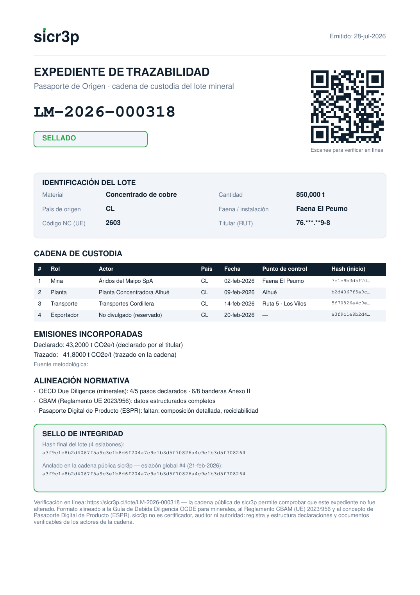
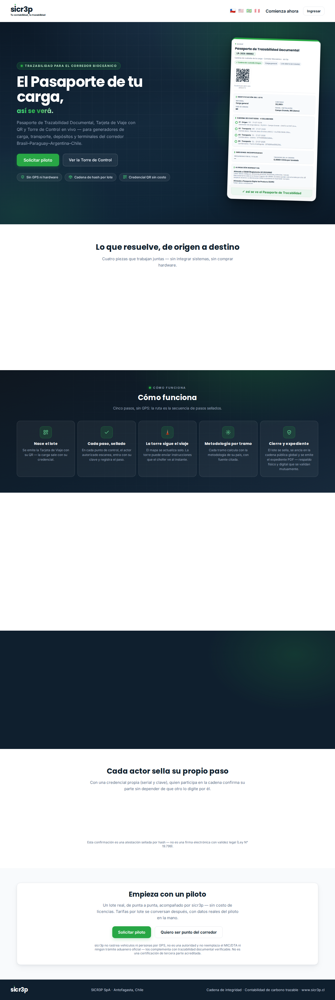
Los 8 paneles por rol
Cada actor ve exactamente lo suyo — el aislamiento es una garantía, no una limitación.
Todos los paneles comparten el mismo login endurecido (contraseña + opcionalmente llave física FIDO2), y el backend filtra cada consulta por la entidad de la sesión: un puerto no puede ver los tránsitos de otro punto, un trazador solo consulta los RUT que se le autorizaron, un proveedor solo firma lo que se le asignó.
Admin (núcleo)
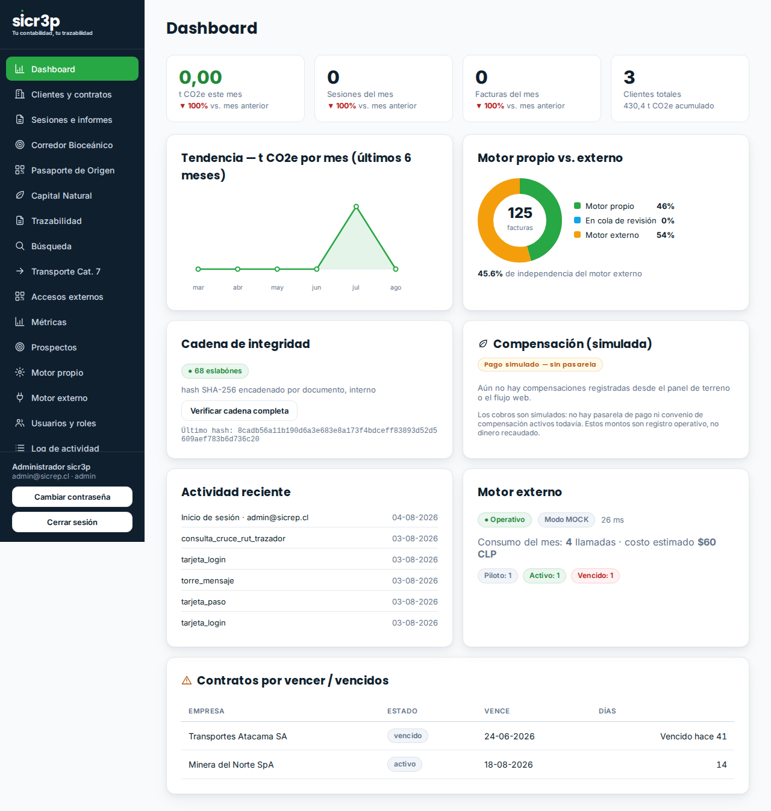
Panel de terreno
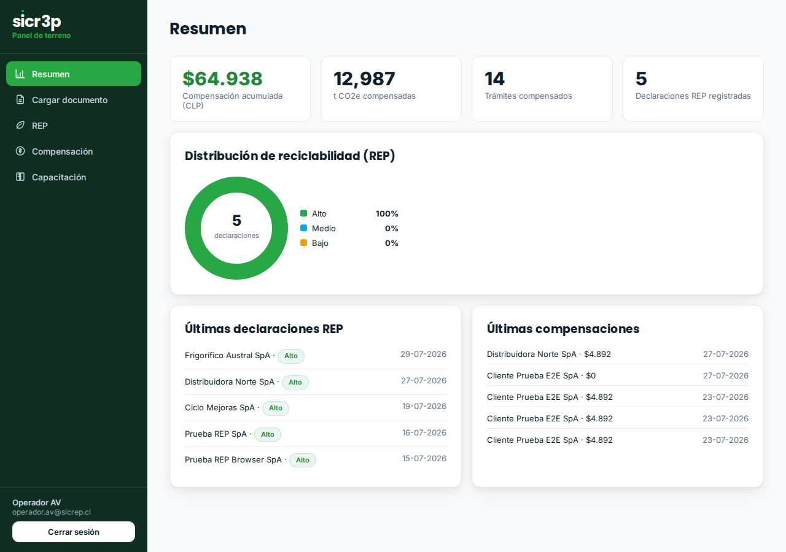
Los cinco paneles externos del Corredor


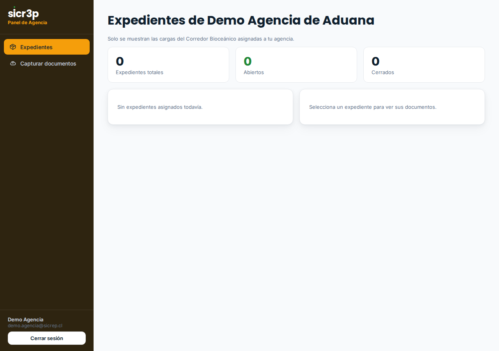
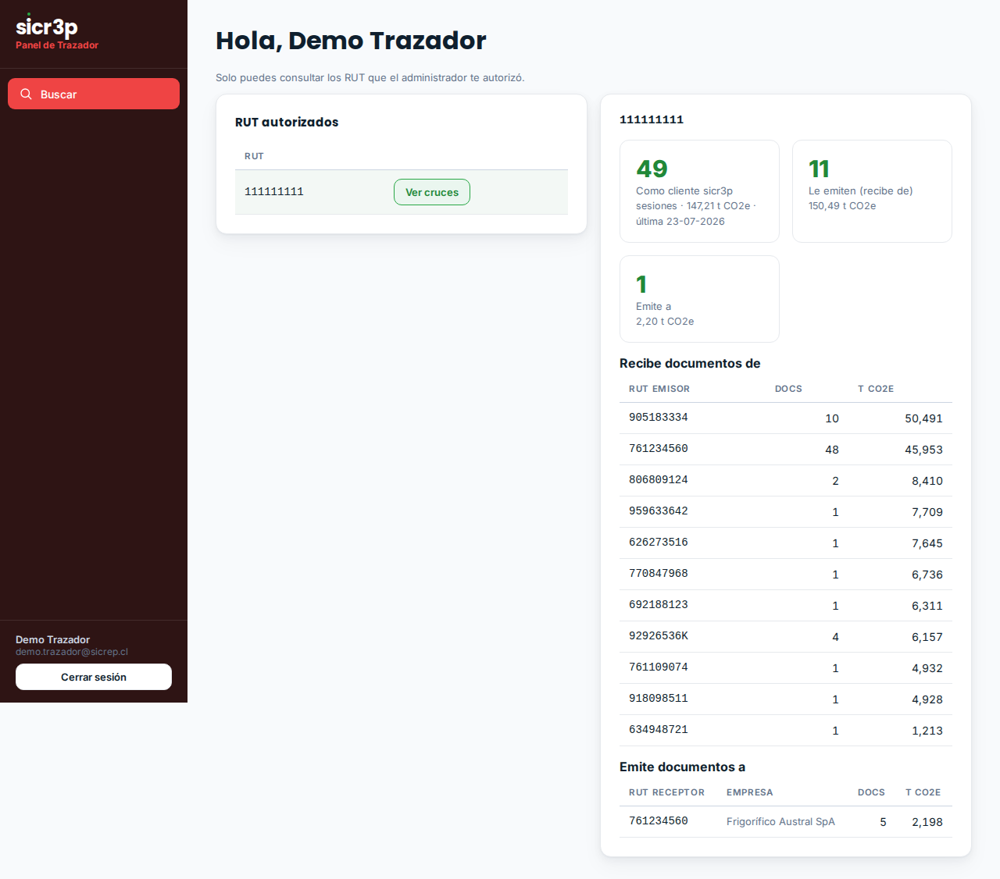
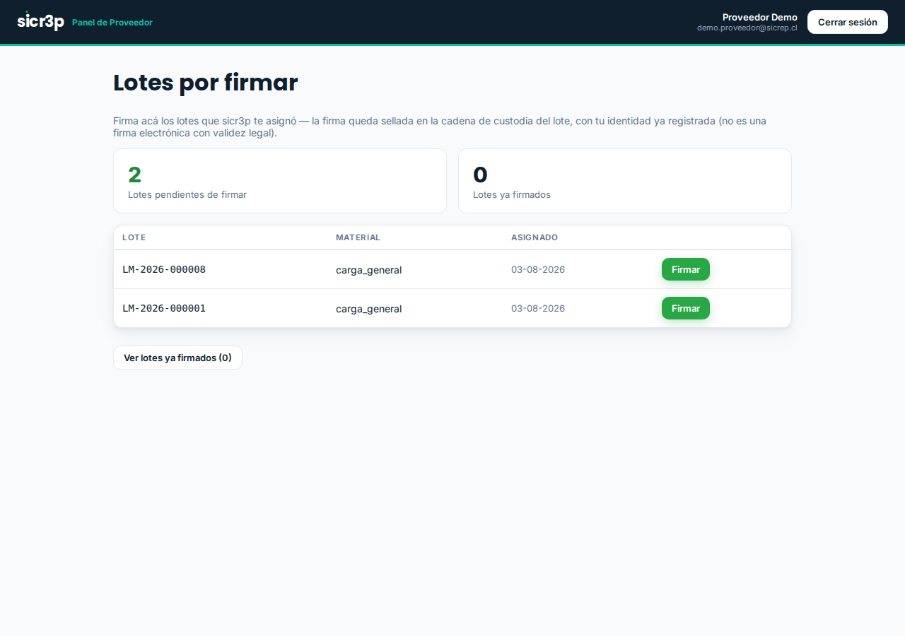
Integridad y verificación pública
Todo lo importante se puede comprobar sin cuenta, sin permiso y sin confiar en sicr3p.
| Vía | Qué comprueba | Cómo |
|---|---|---|
/verificar/:id | Un informe o factura específica | QR de la etiqueta o el ID del documento |
/cadena | La cadena global de integridad | Explorador público, eslabón por eslabón |
/lote/:codigo | El pasaporte completo de una carga | Código del lote o QR del expediente |
/constancia/:serial | Una constancia de capacitación | QR impreso en la constancia |
/f/:serial | La credencial de un proveedor o puerto | QR de la credencial de atestación |
| Sello SVG | Estado de integridad de una sesión | Imagen incrustable en sitios del cliente |
La "hoja de comprobación en 30 segundos" de la carpeta del mandante resume el espíritu: cualquier tercero, con un teléfono, puede pasar del papel al registro sellado y confirmar que nada fue alterado desde su emisión.
Cumplimiento y datos
Ley 21.719 de datos personales incorporada al diseño, y una posición honesta frente a las normas ISO.
Datos personales (Ley 21.719)
- Retención con purga automática: los datos personales vencidos se eliminan por política programada — sin tocar nada encadenado por hash (lo sellado se conserva porque es evidencia, no dato personal disponible).
- Derechos ARCOP: cualquier titular puede pedir acceso, rectificación,
cancelación, oposición o portabilidad desde
/mis-datos; el admin gestiona la bandeja con plazos. - Registro de brechas: procedimiento y panel para documentar incidentes, como exige la ley.
La posición frente a ISO
Lo que sicr3p NO afirma: sus informes no constituyen una verificación de tercera parte acreditada (ISO 14064-3) ni un certificado oficial — cita textual de los Términos de Servicio. El sistema está construido para sobrevivir esa auditoría, no para reemplazarla: si un cliente necesita certificar, contrata al verificador acreditado y le entrega el expediente que sicr3p ya dejó listo.
Seguridad
Sesiones JWT por panel, contraseñas bcrypt, llaves físicas FIDO2/WebAuthn opcionales, límite de intentos de login, verificación de configuración al arrancar (el servidor se niega a partir en producción con secretos débiles o datos de demostración activados), respaldos diarios automáticos y log de actividad de todos los cruces sensibles.
Servicios complementarios
Los módulos que completan la plataforma alrededor del núcleo de medición y trazabilidad.
| Servicio | Qué hace | Dónde vive |
|---|---|---|
| Valorización FIFO/PMP | Valoriza inventarios de materiales con costeo FIFO o precio medio ponderado, alimentado por los mismos DTE. | Admin → Valorización |
| Transporte Cat. 7 | Registra transporte contratado (categoría 7 GHG) por tramo y modo, y lo integra a Capital Natural. | Admin → Transporte |
| Capacitación | Cursos con quiz, puntaje y constancia verificable por QR (nunca se llama "certificación"). | Admin y terreno → Capacitación |
| Búsqueda por RUT | Todas las apariciones de un RUT y sus cruces comprador-vendedor: quién le emite, a quién le emite, con cuánto CO2e. | Admin → Búsqueda |
| Trazabilidad documental | La cadena comprador-vendedor completa reconstruida desde los documentos procesados. | Admin → Trazabilidad |
| API de mandantes | Acceso programático con API key (X-Api-Key) y webhooks de eventos para integrar sicr3p en sistemas del mandante. | Accesos externos |
| Export analítico | Conector BigQuery para llevar todo lo procesado a análisis propio del cliente (opcional, apagado por defecto). | Configuración |
| Compensación voluntaria | Registro de compensaciones con tarifa referencial visible. Los pagos en línea aún no están habilitados: hoy queda el registro y el compromiso documentado. | Terreno → Compensación |
| Enlace de acceso | Acceso del cliente final a sus sesiones e informes por enlace al correo, sin contraseña. | /ingresar |
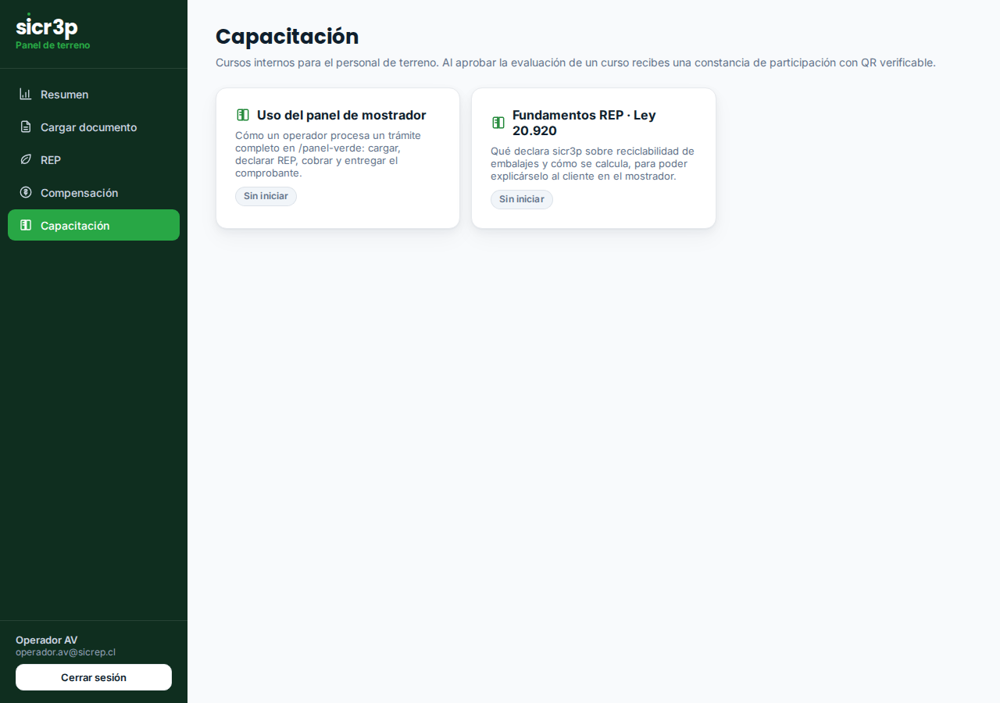
Catálogo de documentos
Los once documentos que el sistema genera, con su miniatura real y dónde se obtiene cada uno.
1 · Informe consolidado de sesión
t CO2e por documento y categoría, alcances GHG con fuente congelada, REP y sello de integridad.
/api/sesiones/:id/informe.pdf2 · Informe mensual por cliente
El período completo del cliente consolidado, con comparativa y detalle.
/api/admin/informes/mensual.pdf3 · Etiqueta por factura
QR de verificación pública + declaración de embalaje, para adherir al documento físico.
/api/facturas/:id/etiqueta.pdf
4 · Estado de Capital Natural
Balance por cuenta ambiental, movimientos del período, activos valorizados e integridad.
/api/admin/capital/balance.pdf5 · Expediente sellado del lote
Eslabones, documentos, semáforo, declaraciones, balance de masas, emisiones y anclaje global.
/api/lote/:codigo/expediente.pdf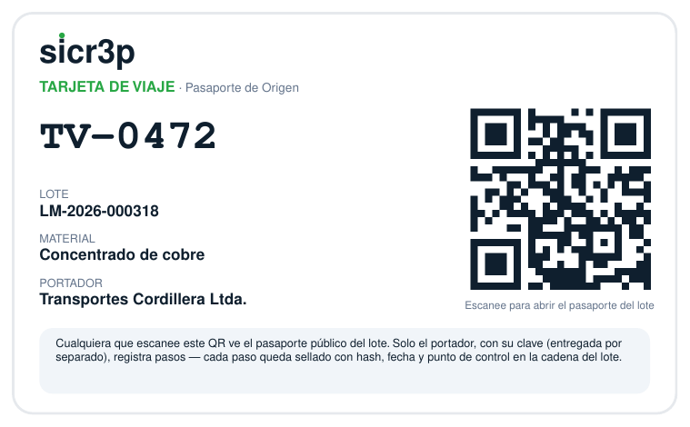
6 · Credencial de Tarjeta de Viaje
La credencial del portador con su QR; la clave nunca se imprime.
7 · Reporte CBAM
Emisiones incorporadas por tonelada (directas/indirectas), método y faltantes, por lote NC.
/api/mandante/export/cbam.pdf (también CSV/JSON)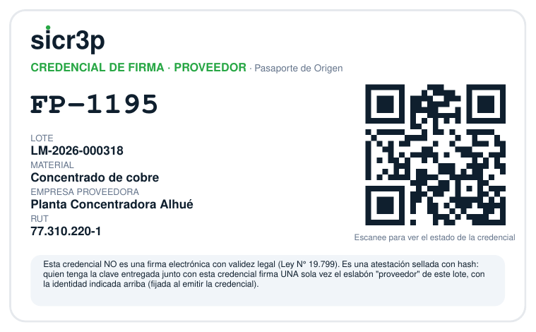
8 · Credencial de atestación (proveedor/puerto)
La credencial con QR para firmar eslabones, en el marco de la Ley 19.799.
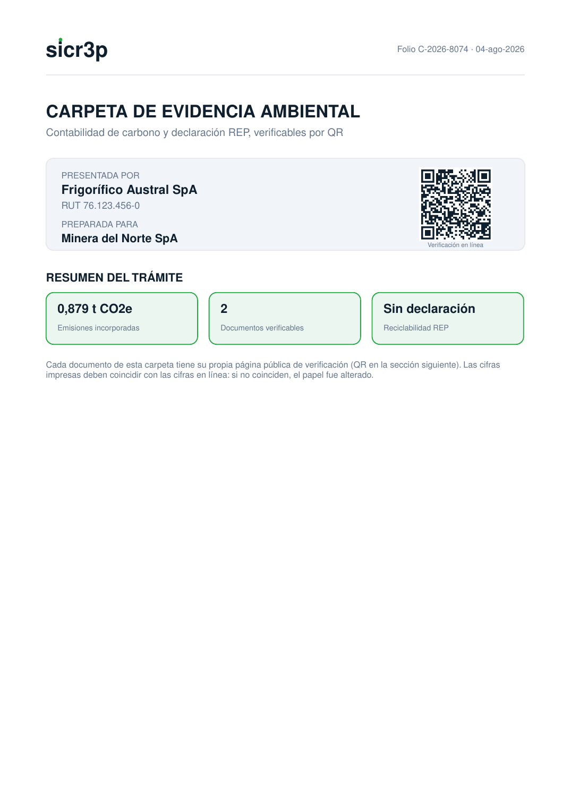
9 · Carpeta de evidencia para el mandante
Portada dirigida al mandante, resumen del trámite, grilla de QRs y la hoja de "comprobación en 30 segundos".
/api/sesiones/:id/carpeta.pdf?mandante=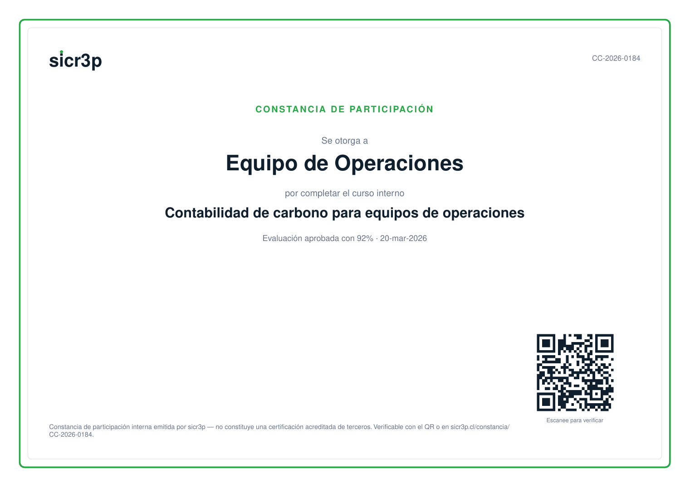
10 · Constancia de capacitación
A4 apaisado con QR de verificación pública; siempre "constancia", nunca "certificación".
/api/capacitacion/constancias/:serial.pdfel contrato incluye los
datos de las partes
11 · Contrato de servicio
Contrato multipágina generado desde la ficha del cliente, con marcas de borrador hasta firmarse.
/api/admin/clientes/:id/contrato.pdfAdemás: export Alcance 3 (CSV/JSON, cap. 6), export CBAM (CSV/JSON), y el sello SVG de integridad incrustable. Las miniaturas 2 y 4 fueron generadas por el sistema con datos reales de demostración; el resto son muestras oficiales con datos ficticios. La carpeta del mandante (9) se generó con datos de demostración y un destinatario ficticio.
Glosario mínimo
| Término | Significado |
|---|---|
| Lote | Una carga con identidad propia (código LM-…) y su expediente sellado. |
| Eslabón | Cada registro encadenado por hash: un actor, una acción, un momento. |
| Tarjeta de viaje | La credencial QR del chofer que registra pasos por los puntos de control. |
| Semáforo documental | Verde/amarillo/rojo según la completitud del expediente aduanero. |
| Mandante | La empresa que exige datos a sus proveedores (y los recibe por su panel o API). |
| Motor propio | El motor de cálculo determinista de CO2e con factores citados y versionados. |
Preguntas frecuentes
¿Necesito GPS o algún equipo en el camión? No. Un teléfono con cámara. La posición es el paso sellado, no un rastreo.
¿Los informes sirven para certificarme ISO? Sirven para prepararte: método citado, cifras reproducibles, cadena auditable. La certificación la emite un verificador acreditado — sicr3p te deja el expediente listo para él.
¿Qué pasa si alguien intenta alterar un registro? La cadena de hash lo delata: el eslabón alterado deja de calzar con el siguiente y la verificación pública falla.
¿Mis competidores pueden ver mis datos? No. Cada panel ve solo su entidad; lo público es únicamente lo que el pasaporte del lote declara como público.
Libro de Servicios sicr3p · Edición 1 · Agosto 2026. La versión web es siempre la vigente. Las cifras e imágenes de ejemplo provienen de entornos de demostración. sicr3p no es certificador, auditor ni autoridad.